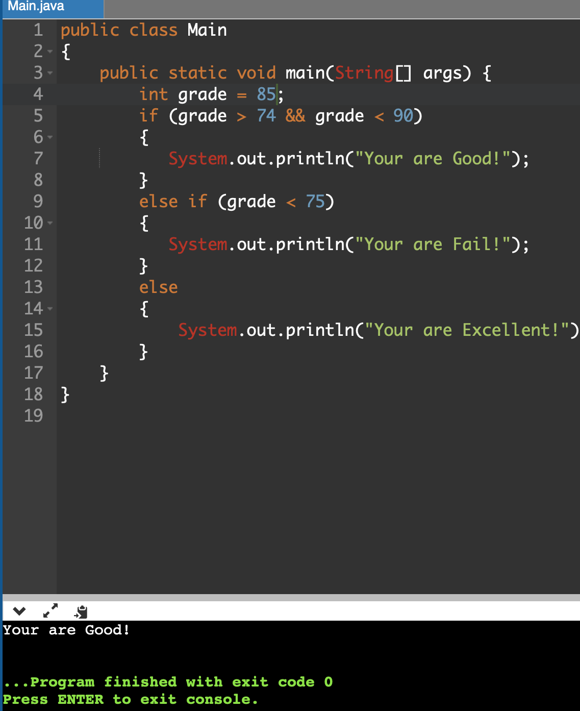
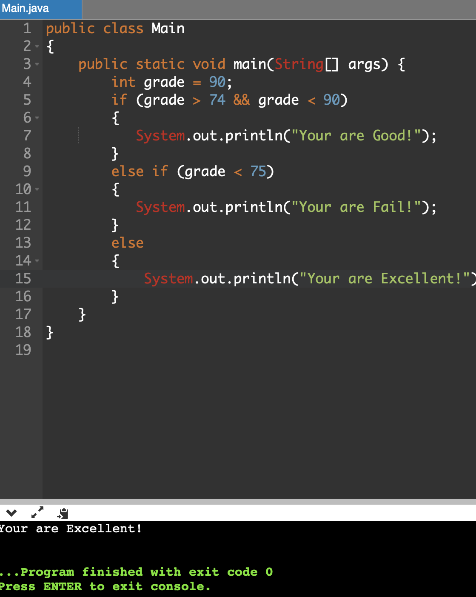
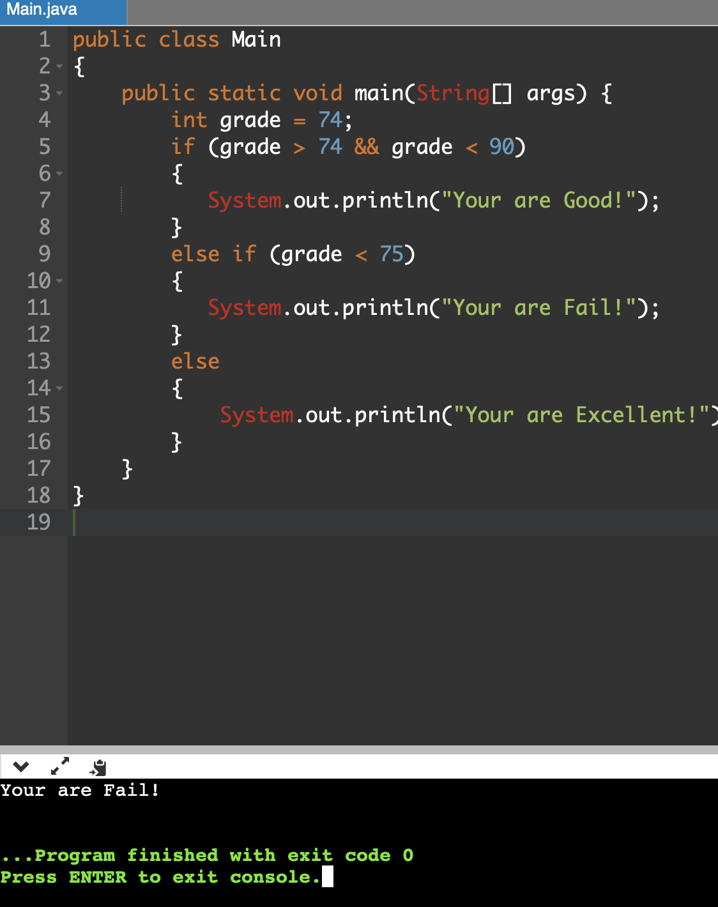
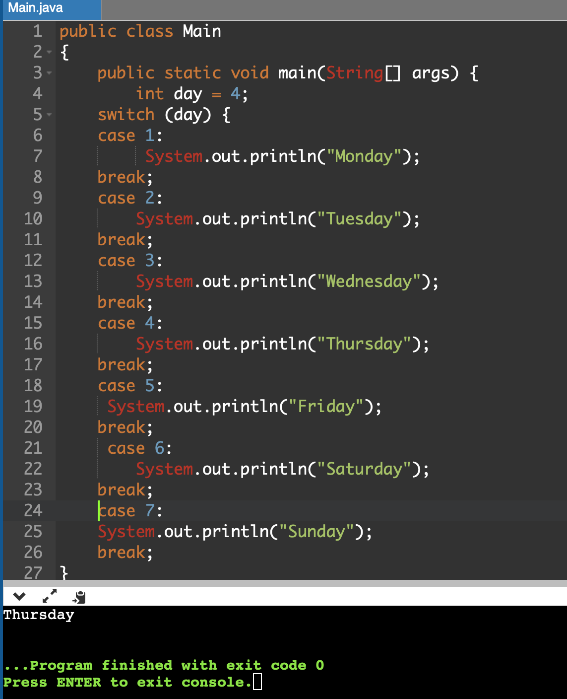

IF STATEMENT
The Java if statement is the most simple decision-making statement. It is used to decide whether a certain statement or block of statements will be executed or not i.e if a certain condition is true then a block of statement is executed otherwise not.

Java Conditional statements
Java has the following conditional statements:
IF STATEMENT

In the example above, we test two values to find out if varible name grade is greater than or equal to 75 and not greater than 90. If the condition is true, print Your are Good!
ELSE STATEMENT

In the example above, we test two values to find out if variable name grade is greater than or equals to 90. If the condition is true, print Your are Excellent!
ELSE IF STATEMENT

In the example above, we test two values to find out if variable name grade is less than to 75. If the condition is true, print Your are Excellent!
SWITCH STATEMENT

Use the switch statement to select one of many code blocks to be executed.
The break Keyword
example:
int day = 4;
switch (day) {
case 1:
System.out.println("Monday");
break;
case 2:
System.out.println("Tuesday");
break;
case 3:
System.out.println("Wednesday");
break;
case 4:
System.out.println("Thursday");
break;
case 5:
System.out.println("Friday");
break;
case 6:
System.out.println("Saturday");
break;
case 7:
System.out.println("Sunday");
break;
}
// Outputs "Thursday" (day 4)